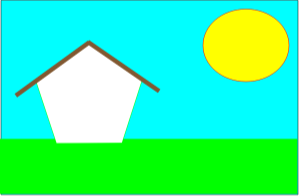
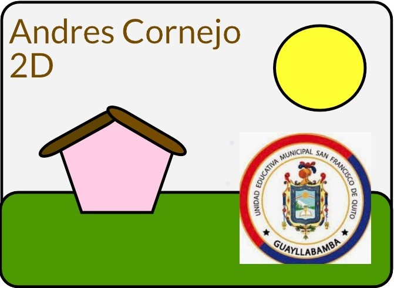
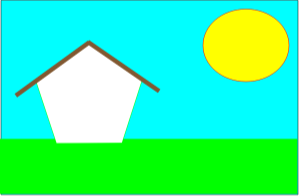
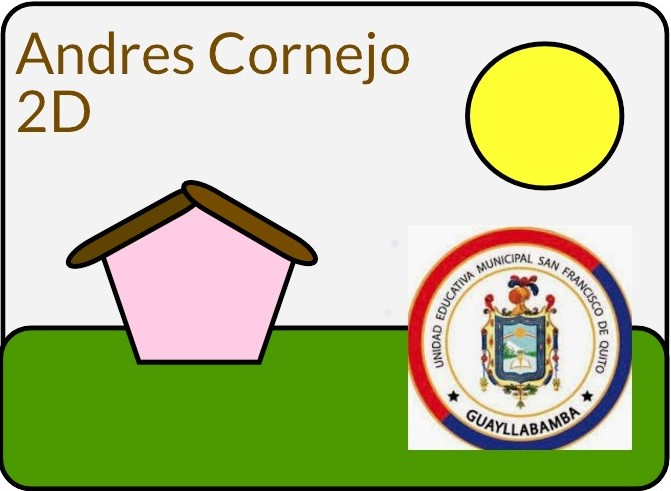

Scratch
Scratch es un lenguaje de programación visual desarrollado por el MIT Media Lab que permite a personas de todas las edades aprender a programar de manera divertida y creativa. En lugar de escribir líneas de código, los usuarios crean programas arrastrando y soltando bloques de código predefinidos en una interfaz gráfica. Es ideal tanto para principiantes como para aquellos que buscan experimentar con conceptos avanzados sin la necesidad de conocimientos previos en programación.
Historia de Scratch
Scratch es un lenguaje de programación visual creado por el Grupo Lifelong Kindergarten del MIT Media Lab. Fue lanzado por primera vez en 2007 como una herramienta educativa para enseñar a niños y jóvenes los conceptos básicos de la programación y la informática de una manera divertida y accesible.
El desarrollo de Scratch se inspiró en las ideas del pionero Seymour Papert, quien creía que los niños podían aprender conceptos matemáticos y lógicos complejos a través del uso de lenguajes de programación. Desde su lanzamiento, Scratch ha evolucionado y ha pasado por varias versiones, la más reciente siendo Scratch 3.0, lanzada en 2019, la cual permitió una mayor flexibilidad en términos de compatibilidad con dispositivos móviles y mejoras en la experiencia del usuario.
Además, Scratch ha tenido un impacto global, con millones de usuarios en todo el mundo compartiendo más de 100 millones de proyectos a través de su plataforma en línea.
Características Principales
- Interfaz amigable y visual:La interfaz de Scratch está diseñada para ser accesible, incluso para aquellos que no tienen experiencia previa en programación. Los bloques de código coloridos hacen que la codificación sea más visual y menos intimidante.
- Gran comunidad de usuarios: Scratch tiene una de las comunidades educativas más grandes del mundo, donde los usuarios pueden compartir sus proyectos, colaborar y aprender unos de otros.
- Compatible con múltiples plataformas: Scratch está disponible tanto en navegadores web como en aplicaciones descargables, lo que permite a los usuarios trabajar en Windows, macOS, Linux, y ahora también en tabletas y móviles.
- Acceso gratuito: Todo el contenido de Scratch es gratuito, lo que lo convierte en una opción ideal para programas educativos en escuelas y organizaciones sin fines de lucro.
- Extensibilidad a través de extensiones: Scratch 3.0 introdujo extensiones que permiten a los usuarios conectar hardware como micro:bit, Lego Mindstorms, y otros dispositivos, permitiendo la creación de proyectos interactivos físicos.
Ejemplos de Proyectos
Juego de Plataforma: Un juego donde un personaje puede saltar y recoger objetos para ganar puntos. Los usuarios pueden crear sus propios personajes y niveles usando bloques de código como "mover", "saltar" y "detectar colisión".
Animación de Historia: Una narrativa interactiva donde los personajes pueden hablar, moverse e interactuar con el usuario. Esta característica permite a los usuarios contar historias visuales mientras aprenden los conceptos básicos de la programación.
Simulación Científica: Modelos interactivos de fenómenos científicos, como el ciclo del agua o el movimiento de los planetas. Los estudiantes pueden crear simulaciones interactivas que ayudan a visualizar y comprender conceptos complejos en ciencia.
Proyectos colaborativos: Scratch permite a varios usuarios trabajar juntos en un mismo proyecto. Esta función es muy útil en entornos escolares donde los estudiantes pueden desarrollar proyectos en equipo.
 



Recursos
Scratch ofrece una amplia variedad de recursos para ayudar a los principiantes a empezar y a los usuarios avanzados a mejorar sus habilidades. Aquí algunos recursos clave:
- Editor de Proyectos: El corazón de Scratch, donde los usuarios pueden crear, modificar y compartir sus proyectos.
- Foros de la Comunidad: Espacio donde los usuarios pueden hacer preguntas, compartir consejos y obtener ayuda de otros miembros de la comunidad.
- Scratch Wiki: Una wiki mantenida por la comunidad que proporciona tutoriales, guías y explicaciones sobre cómo aprovechar al máximo Scratch.
- Recursos para Educadores: Una sección dedicada para profesores y educadores con planes de lecciones, ideas de proyectos y guías sobre cómo integrar Scratch en el aula.
- Scratch Foundation: Una organización sin fines de lucro que apoya el desarrollo y la difusión de Scratch a nivel mundial.
Tabla de Información
| Característica | Descripción |
|---|---|
| Lenguaje | Visual, basado en bloques |
| Público Objetivo | Niños, jóvenes y principiantes en programación |
| Plataformas | Web, Windows, macOS, Linux, tablets, móviles |
| Desarrollador | MIT Media Lab |
| Año de Lanzamiento | 2007 (actualización a 3.0 en 2019) |
| Licencia | Gratis |